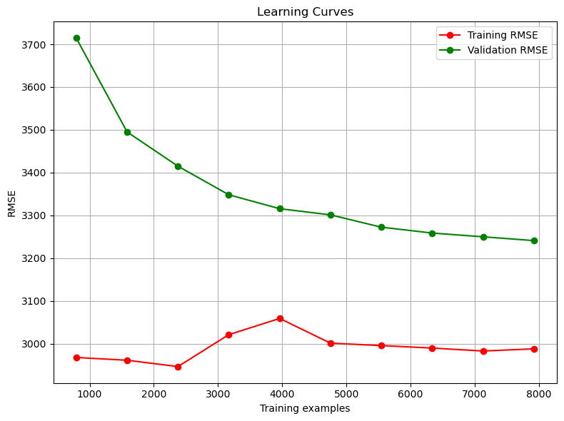
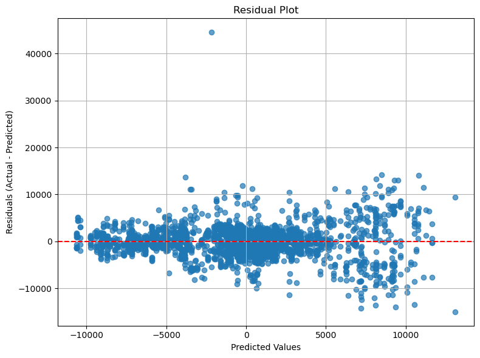
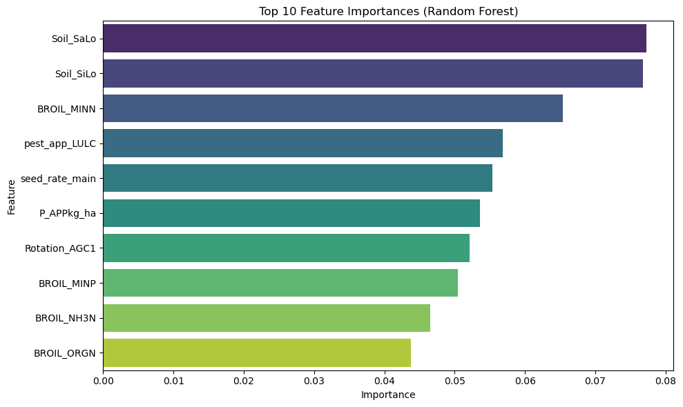
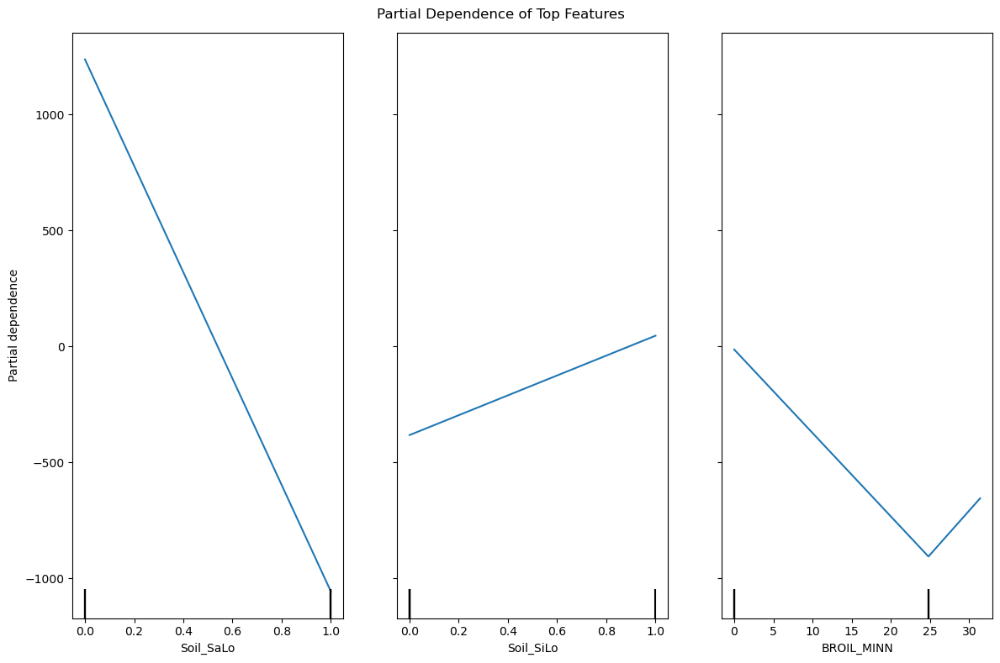
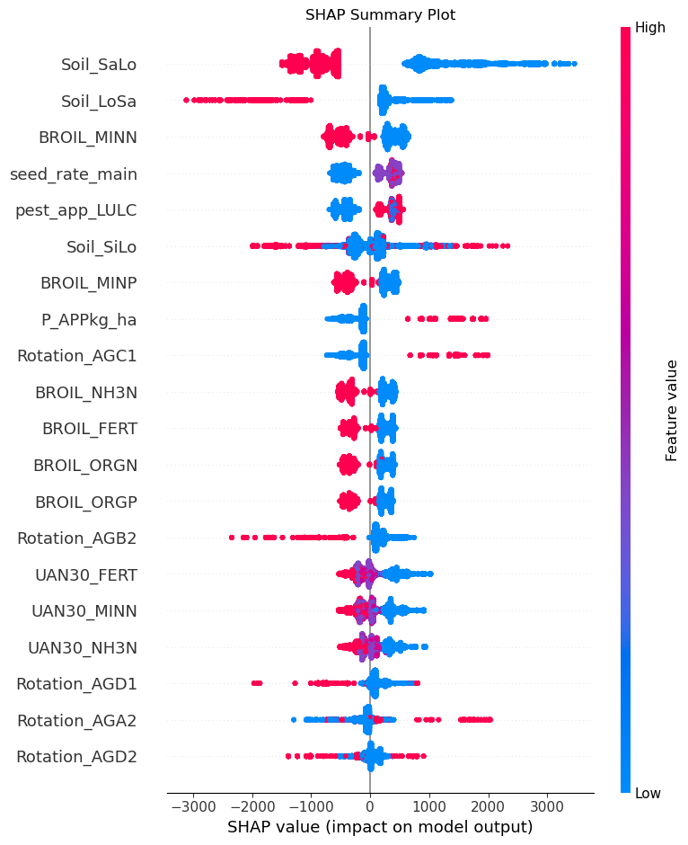

This appendix documents a preliminary machine learning pipeline developed to predict the total global warming potential (GWP_Total) in agricultural systems using Random Forests. It is presented here not as a definitive study, but as a transparent account of a foundational learning experience.
This initial work was instrumental in developing the more sophisticated data processing techniques and modeling intuition applied in the main body of the dissertation. It highlighted critical challenges in feature selection, the handling of highly skewed distributions, and revealed the limitations of a standard Random Forest model for this type of complex environmental data.
Therefore, while the pipeline performs a full suite of tasks; from preprocessing and hyperparameter tuning to evaluation and SHAP analysis, its primary value lies in demonstrating the iterative process of model development and the analytical growth that informed the subsequent, more advanced research detailed in this portfolio.
The notebook performs the following tasks:
Data Loading and Exploration: Reads the dataset (a Feather file) and inspects its structure and summary statistics.
Data Preprocessing: Cleans the data by one-hot encoding categorical variables, dropping irrelevant/constant columns, and handling missing values.
Train/Test Split: Splits the dataset into training and testing sets to ensure that our model generalizes well.
Hyperparameter Tuning: Uses RandomizedSearchCV to optimize the Random Forest parameters (including min_samples_leaf and max_features) using cross-validation.
Model Evaluation: Evaluates the best model’s performance using R², RMSE, MAE, Out-of-Bag (OOB) score, learning curves, permutation feature importance, and residual analysis.
Interpretability: Visualizes feature importance, partial dependence plots, and uses SHAP for both global and local model explanations.
Baseline Comparison: Compares our Random Forest results with a baseline Linear Regression model.
Logging: Logs progress and key results for reproducibility and transparency.
This pipeline predicts the outcome and provides interpretable insights.
Code
import osimport pandas as pdimport numpy as npimport matplotlib.pyplot as pltimport seaborn as snsimport shapimport warningsimport loggingfrom sklearn.ensemble import RandomForestRegressorfrom sklearn.linear_model import LinearRegressionfrom sklearn.metrics import r2_score, mean_squared_error, mean_absolute_errorfrom sklearn.inspection import PartialDependenceDisplay, permutation_importancefrom sklearn.model_selection import train_test_split, RandomizedSearchCV, learning_curvefrom sklearn.model_selection import StratifiedKFold # if needed for classification; here we use regressionimport sklearn# Print current working directory, version and file of sklearnprint("Current working directory:", os.getcwd())print("sklearn version:", sklearn.__version__)print("sklearn location:", sklearn.__file__)
B.1 Logging Configuration
In this section, we set up logging to track the progress and important events throughout the pipeline. Logging ensures that all steps (data loading, preprocessing, model tuning, etc.) are recorded in a log file. This is useful for debugging, reproducibility, and for providing transparency.
Code
# ================================# 0) LOGGING CONFIG# ================================# Set up logging# Use the absolute path for the G: drive (mounted as /mnt/g)LOG_FILE ="/data/GWP_randomforest_2.log"logging.basicConfig( filename=LOG_FILE, level=logging.INFO,format="%(asctime)s [%(levelname)s] %(message)s", datefmt="%Y-%m-%d %H:%M:%S")logging.info("Starting the GWP Prediction Pipeline")warnings.filterwarnings('ignore')
B.2 Data Loading and Exploration
Here we read the dataset from a Feather file. Feather is a fast binary file format for data frames, making data loading efficient. We then: - Preview the Data: Using df.head() to view the first few rows. - Summarize the Data: Using df.describe() to get summary statistics (mean, standard deviation, etc.) for each feature.
This step helps us understand the structure, size, and distribution of the data before any processing.
Code
# ================================# 1) Data Loading and Exploration# ================================logging.info("STEP 1: Reading data and exploring")# Read in the data (adjust the file path as needed)df = pd.read_feather('data/LCA_DATA.feather')# Data Exploration: Print head and summary statisticslogging.info("Data Head:\n%s", df.head())logging.info("Data Summary:\n%s", df.describe())print("Data Head:")print(df.head())print("\nData Summary:")print(df.describe())
B.3 Data Preprocessing
In this section, we prepare the data for modeling by:
One-Hot Encoding: Converting categorical variables (oil, Scenario, LULC, CoverCrop, Rotation) into dummy variables. This allows us to use them in machine learning models.
Dropping Irrelevant Columns: Removing columns that are not useful for prediction (identifiers, target variables already separated).
Handling Missing Values: Filling missing values with a simple strategy (here, 0) to avoid issues during training.
Dropping Constant Columns: Removing columns that have only one unique value since they don’t contribute any information.
These steps ensure the dataset is clean and structured appropriately for machine learning.
Code
# ================================# 2) Data Preprocessing# ================================logging.info("STEP 2: Data preprocessing and one-hot encoding")# Define target and categorical columnstarget_column ="GWP_Total"# variable to predictcategorical_cols = ["Soil", "Scenario", "LULC", "CoverCrop", "Rotation"] # categorical featuresexcluded_cols = [target_column, "seed_GWP_main"] # columns to exclude# One-hot encode categorical columns (drop_first=False to retain all info)df_encoded = pd.get_dummies(df, columns=categorical_cols, drop_first=True)print("\nColumns after one-hot encoding:")logging.info("Columns after one-hot encoding:\n%s", df_encoded.columns)print(df_encoded.columns)# Separate target y and drop excluded columns from predictorsy = df_encoded[target_column]df_encoded = df_encoded.drop(columns=excluded_cols, errors="ignore")X = df_encoded.drop(columns=excluded_cols, errors="ignore")# Fill missing values simply and drop constant columnsX = X.fillna(0)cols_constant = [col for col in X.columns if X[col].nunique() ==1]logging.info("Dropping constant columns: %s", cols_constant)X = X.drop(columns=cols_constant)logging.info("Columns after dropping excluded columns:\n%s", X.columns)print("\nColumns after dropping excluded cols:")print(X.columns)print("Dropping constant columns:", cols_constant)
B.4 Data Preprocessing – Output Explanation
After running the data preprocessing code, we observe the following outputs:
What This Means:
All the original columns are present, including the target variable GWP_Total. Additionally, the categorical variables (like Soil, Scenario, etc.) have been converted into dummy variables. For example, we see columns like Soil_LoSa, Soil_SaLo, etc., which represent the different levels of the original Soil category.
B.4.2 Columns after Dropping Excluded Columns
After removing the columns that are not needed for prediction (the target variable and any explicitly excluded ones), the output is:
What This Means:
The target column GWP_Total and the excluded column seed_GWP_main have been removed from the predictor matrix X. Now, X contains only the features that will be used to predict GWP_Total.
B.4.3 Dropping Constant Columns
The output: Dropping constant columns: []
What This Means:
This indicates that no columns in X had only a single unique value. In other words, every predictor varies to some extent, so no columns were dropped for being constant.
these outputs confirm that: - Categorical variables have been correctly transformed into dummy variables. - Irrelevant columns (target and specified exclusions) have been successfully removed. - The data is clean and ready for the next steps in the pipeline.
B.5 Train/Test Split
We split the dataset into: - Training Set (80%): Used to train the model. - Testing Set (20%): Held out for evaluating the model’s performance on unseen data.
This split is crucial to validate that our model generalizes well beyond the data it was trained on.
Code
# ================================# 3) Train/Test Split# ================================logging.info("STEP 3: Splitting data into train/test")# Split the data (80% train, 20% test)X_train, X_test, y_train, y_test = train_test_split( X, y, test_size=0.20, random_state=42)logging.info("Train shape = %s, Test shape = %s", X_train.shape, X_test.shape)print(f"\nTraining set size: {X_train.shape}, Test set size: {X_test.shape}")
B.6 Train/Test Split – Output Explanation
After splitting the dataset into training and testing sets, we obtain the following:
Training Set Size: (11883, 37)
This means there are 11,883 samples (rows) and 37 features (columns) in the training set.
Testing Set Size: (2971, 37)
The test set contains 2,971 samples and the same 37 features.
What This Means:
80/20 Split:
Approximately 80% of the data is used for training the model, and 20% is reserved for evaluating its performance on unseen data. This is crucial to ensure that our model generalizes well and is not overfitting.
Consistent Feature Dimensions:
Both sets have 37 features, which confirms that the preprocessing steps (e.g., one-hot encoding, dropping irrelevant columns) have been applied consistently across the entire dataset.
Overall, these numbers indicate a successful split, setting the stage for model training and evaluation.
B.7 Hyperparameter Tuning with RandomizedSearchCV
Here, we use RandomizedSearchCV to optimize the hyperparameters of the Random Forest model. Key points include:
Parameter Grid: We define ranges for parameters such as n_estimators, max_depth, min_samples_split, min_samples_leaf, and max_features.
Randomized Search: Rather than checking every possible combination (which can be computationally expensive), we sample a subset of parameter settings.
Cross-Validation (CV=3): For each parameter combination, 3-fold cross-validation is used to estimate performance (using negative RMSE here).
The best hyperparameters are selected based on cross-validation results, ensuring that the final model is tuned for optimal performance.
Code
# ================================# 4) Hyperparameter Tuning with RandomizedSearchCV# ================================logging.info("STEP 4: Hyperparameter Tuning with RandomizedSearchCV")from sklearn.model_selection import RandomizedSearchCV# Expanded parameter grid includes min_samples_leaf and max_featuresparam_dist = {'n_estimators': [100, 200, 300],'max_depth': [None, 5, 10, 20],'min_samples_split': [2, 5, 10],'min_samples_leaf': [1, 2, 5],'max_features': ['auto', 'sqrt']}# Instantiate RandomForestRegressor with oob_score enabled for extra validationrf = RandomForestRegressor(random_state=42, oob_score=True)search = RandomizedSearchCV( estimator=rf, param_distributions=param_dist, n_iter=10, scoring='neg_root_mean_squared_error', cv=3, verbose=1, random_state=42, n_jobs=-1)search.fit(X_train, y_train)best_model = search.best_estimator_print("Best params:", search.best_params_)logging.info("Best params from RandomizedSearchCV: %s", search.best_params_)
B.8 Hyperparameter Tuning with RandomizedSearchCV – Output Explanation
In this step, we optimize the hyperparameters of our Random Forest model using RandomizedSearchCV. Here’s what the output tells us:
Fitting 3 folds for each of 10 candidates, totalling 30 fits:
This message indicates that the search evaluated 10 different hyperparameter configurations (candidates). For each configuration, 3-fold cross-validation was performed (i.e., the training set was split into 3 parts, with 2 used for training and 1 for validation), resulting in a total of 30 model fits.
Best params:
The output displays the best set of hyperparameters found by the search. In this example, the best parameters are:
n_estimators: 200 (i.e., the model will use 200 trees)
min_samples_split: 10 (i.e., a node must have at least 10 samples before it can be split)
min_samples_leaf: 2 (i.e., each leaf must have at least 2 samples)
max_features: ‘sqrt’ (i.e., the square root of the number of features will be considered when looking for the best split)
max_depth: 20 (i.e., the maximum depth of each tree is set to 20)
Interpretation:
- The RandomizedSearchCV process sampled 10 configurations from our parameter grid and evaluated each using 3-fold cross-validation.
- The configuration with the lowest (negative) RMSE during cross-validation was chosen.
- These best parameters will be used in the final model, ensuring that our Random Forest is well-tuned to our data, potentially leading to improved performance on unseen data.
This detailed tuning step helps in making our model more robust and generalizable.
B.9 Model Evaluation
This section evaluates the performance of our tuned Random Forest model using multiple metrics:
R² (Coefficient of Determination): Measures the proportion of variance explained by the model.
RMSE (Root Mean Squared Error): Indicates the average magnitude of the prediction error.
MAE (Mean Absolute Error): Provides the average absolute error, which is less sensitive to outliers than RMSE.
Out-of-Bag (OOB) Score: An internal cross-validation metric available in Random Forests when oob_score=True.
B.9.1 Extra Validation Checks
Learning Curves: We plot learning curves to see how training and validation errors change with increasing training set size. This helps diagnose overfitting or underfitting.
Permutation Feature Importance: Measures how the model’s performance deteriorates when a feature’s values are randomly shuffled. This provides an alternative view of feature importance.
Residual Analysis: A plot of residuals (actual minus predicted values) to check for any systematic patterns that the model might be missing.
Baseline Comparison: We also fit a simple Linear Regression model to compare its performance with our Random Forest model.
These checks provide a comprehensive view of the model’s performance and robustness.
After training our tuned Random Forest model, we evaluate its performance using multiple metrics and additional validation checks.
B.10.1 Performance Metrics
Printed Output: Training set: R^2 = 0.702, RMSE = 3001.564, MAE = 2025.280 Test set: R^2 = 0.668, RMSE = 3155.660, MAE = 2147.089 OOB Score: 0.661
R² (Coefficient of Determination):
Training R² = 0.702
Test R² = 0.668
The model explains roughly 70% of the variance in the training set and about 67% in the test set. This small gap indicates that the model generalizes reasonably well with some overfitting.
RMSE (Root Mean Squared Error):
Training RMSE ≈ 3001
Test RMSE ≈ 3156
RMSE gives the average magnitude of the prediction error. A difference of about 155 between training and test suggests the model’s performance on unseen data is close to its performance on training data.
MAE (Mean Absolute Error):
Training MAE ≈ 2025
Test MAE ≈ 2147
MAE is less sensitive to outliers than RMSE. These values confirm a consistent level of error on training vs. test sets.
Out-of-Bag (OOB) Score = 0.661
Random Forests can estimate performance internally (without a separate validation set) by using out-of-bag samples. An OOB score of 0.661 aligns closely with the test R² of 0.668, giving additional confidence in the model’s ability to generalize.
B.10.2 Learning Curves

Learning Curves
The Learning Curves plot shows how RMSE (vertical axis) changes for both the training set (red line) and validation set (green line) as the number of training examples increases (horizontal axis). Key observations:
Training RMSE remains relatively stable around ~3000, indicating the model fits the training data consistently.
Validation RMSE decreases from about 3700 to 3200 as more training data is used, suggesting that adding more data helps reduce error.
The gap between training and validation curves narrows but does not fully converge, indicating the model could still benefit from more data or further hyperparameter tuning. However, the gap is not excessively large, suggesting a reasonable balance between bias and variance.
B.10.3 Permutation Feature Importance
What It Means:
Permutation Importance measures how much the model’s performance deteriorates when each feature’s values are randomly shuffled. Features with higher importance_mean cause a greater increase in RMSE when shuffled, indicating they are more crucial to the model. This provides an alternative perspective on which predictors matter most, complementing the built-in feature importance from the Random Forest itself.
B.10.4 Residual Analysis

Residual Plot
The Residual Plot (actual minus predicted values on the y-axis vs. predicted values on the x-axis) helps identify patterns in the errors:
The red dashed line at y=0 indicates perfect predictions.
Residuals appear mostly centered around 0, with some spread at higher predicted values.
No strong pattern or trend suggests the model is systematically over- or under-predicting at particular ranges.
The moderate spread indicates the model still has some variance in its predictions, but there is no major sign of severe bias.
B.10.5 Baseline Comparison
Baseline Linear Regression Performance: R^2 = 0.576, RMSE = 3566.148, MAE = 2570.892
Linear Regression R² = 0.576
Linear Regression RMSE ≈ 3566
Linear Regression MAE ≈ 2571
Compared to our Random Forest (R² = 0.668), the baseline linear model performs worse across all metrics (lower R², higher RMSE, and higher MAE). This shows that the additional complexity of the Random Forest provides a noticeable performance boost and better captures the underlying relationships in the data.
B.10.6Summary of Model Evaluation
Metrics show the Random Forest performing well, with a small gap between training and test performance.
Learning Curves suggest the model benefits from more data and is not drastically overfitting.
Permutation Importance corroborates which features the model relies on most.
Residual Plot reveals no major systematic bias in predictions, though there is some variance at higher values.
Baseline Comparison confirms that the Random Forest outperforms a simpler Linear Regression model.
Overall, these results indicate a reasonably robust model that generalizes better than a simple baseline and provides insights into which features matter most.
B.11 Feature Importance and Partial Dependence
Understanding which features drive the model predictions is key for interpretability. In this section, we:
Built-in Feature Importance: Leverage the Random Forest’s internal mechanism to rank features based on how much they reduce impurity.
Bar Plot Visualization: Display the top 10 features to quickly identify the most influential predictors.
Partial Dependence Plots (PDP): Visualize the effect of the top features on the predicted outcome while holding other features constant. This helps in understanding the relationship between predictors and the target variable.
These tools help understand the model’s decision-making process.
Code
# ================================# 6) Feature Importance and Partial Dependence# ================================"""FEATURE IMPORTANCE: Lists the top 10 features based on the model’s built-in importance scores. Produces a bar chart so we can visually interpret which features are most influential."""logging.info("STEP 6: Feature importance plots & partial dependence")# Built-in feature importance from Random Forestimportances = best_model.feature_importances_feat_imp = pd.Series(importances, index=X_train.columns).sort_values(ascending=False)logging.info("Top 10 Features:\n%s", feat_imp.head(20))print("\nTop 10 Feature Importances:")print(feat_imp.head(10))# Bar plot for feature importanceplt.figure(figsize=(10, 6))sns.barplot(x=feat_imp.head(10), y=feat_imp.head(10).index, palette="viridis")plt.title("Top 10 Feature Importances (Random Forest)")plt.xlabel("Importance")plt.ylabel("Feature")plt.tight_layout()plt.show()# Partial Dependence Plots for top featurestop_features = feat_imp.head(3).index.tolist()logging.info("Generating partial dependence plots for top features: %s", top_features)fig, ax = plt.subplots(figsize=(12, 8))PartialDependenceDisplay.from_estimator(best_model, X_train, top_features, n_jobs=-1, ax=ax)fig.suptitle("Partial Dependence of Top Features")plt.tight_layout()plt.show()
What It Means:
The Random Forest model computes an “importance” score for each feature, reflecting how much that feature reduces impurity (variance) in the trees. Higher values indicate more influential predictors.
Soil_SaLo and Soil_SiLo appear to be the top two features, suggesting that soil types have a significant impact on GWP_Total.
BROIL_MINN (a nitrogen-related feature) also ranks high, indicating fertilizer- or manure-related variables may be critical to the model.
pest_app_LULC, seed_rate_main, and P_APPkg_ha follow, further suggesting that application rates and crop management choices drive GWP_Total.
B.11.2 Bar Chart Visualization

Top 10 Feature Importances (Random Forest)
In the bar chart:
Horizontal Axis (Importance): Shows how crucial each feature is.
Vertical Axis (Feature): Lists the top 10 features in descending order of importance.
This chart helps both technical and non-technical audiences quickly see which variables most influence the model’s predictions.
B.11.3 Partial Dependence Plots (PDP)
Partial Dependence Plots help us understand how the most important features influence the model’s prediction for GWP_Total. Each plot shows the effect of a single feature while averaging out the effects of all other features.

Partial Dependence of Top Features
What PDP Shows:
Each subplot corresponds to one of the top 3 features. On the x-axis is the feature’s possible values; on the y-axis is the partial dependence, which represents the model’s predicted outcome when varying that feature while holding others constant.
B.11.4 Interpretation of Key Findings
Soil_SaLo (Sandy Loam Soil)
This plot shows a strong negative relationship. The model predicts a significantly lower GWP_Total when the soil type is Sandy Loam (value of 1) compared to other types. This suggests that sandy loam soil is a key factor in mitigating GWP in this model.
Soil_SiLo (Silty Loam Soil)
In contrast, the model associates Silty Loam soil (value of 1) with an increase in the predicted GWP_Total.
BROIL_MINN
This feature displays a clear non-linear relationship. The model predicts the lowest GWP_Total when BROIL_MINN is at a “sweet spot” of approximately 25. Values lower or higher than this optimum level are associated with an increase in predicted GWP. This complex pattern highlights the model’s ability to capture relationships that a standard linear regression would miss.
B.12 SHAP Analysis for Model Interpretability
To understand the drivers of the model’s predictions, SHAP (SHapley Additive exPlanations) analysis was performed. The following bar plot shows the global feature importance, ranking features by their average impact on the model’s output magnitude.
B.12.1 Interpretation of Key Findings
Primary Drivers (Soil Type): Consistent with other importance measures, soil types are the most influential features. Soil_SaLo (Sandy Loam) has the largest average impact on the model’s predictions, followed closely by Soil_LoSa (Loamy Sand).
Secondary Drivers (Management & Inputs): After soil type, key management and input variables show significant importance. These include BROIL_MINN (a nitrogen-related feature), seed_rate_main, and pest_app_LULC (pesticide application).
Tertiary Drivers: Other nitrogen and phosphorus-related inputs (BROIL_MINP, P_APPkg_ha) and specific crop rotations (Rotation_AGC1) also contribute meaningfully to the predictions, but with less overall impact than the primary and secondary drivers.
This ranking confirms that the model’s predictions for GWP_Total are most heavily influenced by the inherent soil characteristics of a site, followed by key agricultural inputs and management decisions.
Code
# ================================# 7) SHAP Analysis for Interpretability# ================================"""SHAP ANALYSIS Provides global interpretability through SHAP summary plots. Gives a local explanation (force plot) for one individual test case, which shows how each feature contributes to a single prediction."""logging.info("STEP 7: SHAP analysis for global & local interpretability")# SHAP: Global and local interpretabilityexplainer = shap.TreeExplainer(best_model)shap_values = explainer.shap_values(X_train)# Global SHAP plots (bar and summary)shap.summary_plot(shap_values, X_train, plot_type="bar", show=False)plt.title("SHAP Feature Importance (Bar Plot)")plt.tight_layout()plt.show()shap.summary_plot(shap_values, X_train, show=False)plt.title("SHAP Summary Plot")plt.tight_layout()plt.show()# Local SHAP explanation for the first test instancelogging.info("Generating SHAP force plot for the first test instance")print("\nGenerating SHAP force plot for the first test instance...")instance = X_test.iloc[0]instance_shap = explainer.shap_values(instance)shap.force_plot(explainer.expected_value, instance_shap, instance, matplotlib=True)
The SHAP summary plot provides a powerful global view of the model’s behavior. It reveals not only the importance of each feature but also the direction and consistency of its effect on the GWP_Total prediction.

SHAP Summary Plot
B.12.2.1 Interpretation of Key Findings
This plot reveals several clear patterns learned by the model:
The Dominant Effect of Soil Type:
Soil_SaLo (Sandy Loam) & Soil_LoSa (Loamy Sand): These are the two most important features. The plot shows a very clean separation: when these soils are present (red dots, feature value = 1), they consistently have a large negative SHAP value, meaning they strongly push the model to predict a lower GWP. Their absence (blue dots, feature value = 0) results in a positive SHAP value, increasing the predicted GWP.
Soil_SiLo (Silty Loam): This feature shows the opposite effect. Its presence (red dots) consistently pushes the prediction higher (positive SHAP values).
The Non-Linear Impact of Nitrogen (BROIL_MINN):
This feature shows a complex, non-linear pattern. Both low values (blue dots) and high values (red dots) push the GWP prediction higher. The optimal values that push the prediction lower (negative SHAP values) are in the middle of the range (represented by the purple-ish dots). This confirms the “V” shape we saw in the Partial Dependence Plot, indicating an optimal “sweet spot” for this input.
Impact of Management Practices:
seed_rate_main & pest_app_LULC: For both of these features, there is a clear trend. High values (red dots) are on the right, pushing the prediction higher, while low values (blue dots) are on the left, pushing it lower. This indicates the model has learned a positive correlation: higher seeding and pesticide rates are associated with higher predicted GWP.
This single visualization confirms the model’s logic. It’s not just a black box; it has learned scientifically plausible relationships, such as the strong mitigating effect of certain soil types and the non-linear impact of nitrogen inputs.
B.12.3 SHAP Force Plot: Explaining a Single Prediction
This force plot provides a detailed look at how the model arrived at its prediction for one specific data point in your dataset. It can be described as a “tug-of-war” between features that push the prediction higher and those that pull it lower.
Lets walk through the story of this specific prediction, from right to left:
SHAP Force Plot
The Starting Point (base value): The model starts with the base value, which is the average prediction for GWP_Total across all data points in your training set. While the exact number isn’t represented, we can see it’s a positive value on the x-axis. This is the model’s initial “guess” before considering any of this specific data points features.
The “Pushing” Forces (Red): Next, the features in red push the prediction to the right (higher GWP). For this specific data point:
Soil_SaLo = 0.0: The absence of the highly mitigating Sandy Loam soil is the single biggest factor pushing the GWP prediction up.
Rotation_AGC1 = 1.0: The presence of this specific crop rotation also contributes to a higher predicted GWP.
P_APPkg_ha = 43.96: The value of this phosphorus input adds another push higher.
The “Pulling” Forces (Blue): These are the features that drag the prediction to the left (lower GWP). For this data point, their combined effect is much stronger:
BROIL_MINN = 24.8: This nitrogen value is extremely close to the optimal spot of 25 identified earlier, so it has a very strong effect, pulling the GWP prediction down.
seed_rate_main = 168.1, pest_app_LULC = 1.08, and BROIL_MINP = 9.92: The specific values for seed rate, pesticide application, and another manure input all contribute to lowering the predicted GWP for this instance.
The Final Prediction (f(x)): The final prediction of -1846.89 is the result of this tug-of-war. The combined downward pull of the blue features was so significant that it completely overwhelmed both the high starting base value and the upward push of the red features.
In summary, this plot tells a clear story: This specific field scenario was predicted to have a very low (even negative) GWP, despite lacking the beneficial Sandy Loam soil, primarily because its nitrogen input (BROIL_MINN) was at the perfect level to minimize emissions, with other management practices also contributing favorably.
B.13 Conclusions from SHAP Analysis
Collectively, the SHAP analyses provide a multi-layered understanding of the Random Forest model’s behavior, moving from high-level feature importance to the specifics of individual predictions.
The analysis confirms that soil type (Soil_SaLo, Soil_LoSa) is the single most dominant factor driving GWP_Total predictions, with specific types having a strong mitigating effect. Beyond this, the plots reveal the complex, non-linear impact of key inputs. A prime example is the nitrogen-related feature BROIL_MINN, where the model identified an optimal “sweet spot” for minimizing GWP—an insight unavailable from simpler linear models.
Furthermore, the force plot provides a clear case study of how these global trends interact at a local level, demonstrating a specific instance where optimal management inputs could overcome less-than-ideal soil conditions to produce a favorable outcome.
This deep interpretability, which clarifies both what the model prioritizes and why it makes a specific prediction, is crucial. It validates the model as more than just a predictor, but as a trustworthy tool for generating actionable scientific hypotheses about the drivers of GWP in agricultural systems.
Source Code
# Preliminary LCA Cover crop Analysis {#sec-appendix-b-lca}This appendix documents a preliminary machine learning pipeline developed to predict the total global warming potential (GWP_Total) in agricultural systems using Random Forests. It is presented here not as a definitive study, but as a transparent account of a foundational learning experience.This initial work was instrumental in developing the more sophisticated data processing techniques and modeling intuition applied in the main body of the dissertation. It highlighted critical challenges in feature selection, the handling of highly skewed distributions, and revealed the limitations of a standard Random Forest model for this type of complex environmental data.Therefore, while the pipeline performs a full suite of tasks; from preprocessing and hyperparameter tuning to evaluation and SHAP analysis, its primary value lies in demonstrating the iterative process of model development and the analytical growth that informed the subsequent, more advanced research detailed in this portfolio.The notebook performs the following tasks:1. **Data Loading and Exploration:** Reads the dataset (a Feather file) and inspects its structure and summary statistics.2. **Data Preprocessing:** Cleans the data by one-hot encoding categorical variables, dropping irrelevant/constant columns, and handling missing values.3. **Train/Test Split:** Splits the dataset into training and testing sets to ensure that our model generalizes well.4. **Hyperparameter Tuning:** Uses `RandomizedSearchCV` to optimize the Random Forest parameters (including `min_samples_leaf` and `max_features`) using cross-validation.5. **Model Evaluation:** Evaluates the best model's performance using R², RMSE, MAE, Out-of-Bag (OOB) score, learning curves, permutation feature importance, and residual analysis.6. **Interpretability:** Visualizes feature importance, partial dependence plots, and uses SHAP for both global and local model explanations.7. **Baseline Comparison:** Compares our Random Forest results with a baseline Linear Regression model.8. **Logging:** Logs progress and key results for reproducibility and transparency.This pipeline predicts the outcome and provides interpretable insights.```{python}#| label: import-packages#| eval: falseimport osimport pandas as pdimport numpy as npimport matplotlib.pyplot as pltimport seaborn as snsimport shapimport warningsimport loggingfrom sklearn.ensemble import RandomForestRegressorfrom sklearn.linear_model import LinearRegressionfrom sklearn.metrics import r2_score, mean_squared_error, mean_absolute_errorfrom sklearn.inspection import PartialDependenceDisplay, permutation_importancefrom sklearn.model_selection import train_test_split, RandomizedSearchCV, learning_curvefrom sklearn.model_selection import StratifiedKFold # if needed for classification; here we use regressionimport sklearn# Print current working directory, version and file of sklearnprint("Current working directory:", os.getcwd())print("sklearn version:", sklearn.__version__)print("sklearn location:", sklearn.__file__)```## Logging ConfigurationIn this section, we set up logging to track the progress and important events throughout the pipeline. Logging ensures that all steps (data loading, preprocessing, model tuning, etc.) are recorded in a log file. This is useful for debugging, reproducibility, and for providing transparency.```{python}#| label: logging-and-configuration#| eval: false# ================================# 0) LOGGING CONFIG# ================================# Set up logging# Use the absolute path for the G: drive (mounted as /mnt/g)LOG_FILE ="/data/GWP_randomforest_2.log"logging.basicConfig( filename=LOG_FILE, level=logging.INFO,format="%(asctime)s [%(levelname)s] %(message)s", datefmt="%Y-%m-%d %H:%M:%S")logging.info("Starting the GWP Prediction Pipeline")warnings.filterwarnings('ignore')```## Data Loading and ExplorationHere we read the dataset from a Feather file. Feather is a fast binary file format for data frames, making data loading efficient. We then:- **Preview the Data:** Using `df.head()` to view the first few rows.- **Summarize the Data:** Using `df.describe()` to get summary statistics (mean, standard deviation, etc.) for each feature.This step helps us understand the structure, size, and distribution of the data before any processing.```{python}#| label: data-loading-exploration#| eval: false# ================================# 1) Data Loading and Exploration# ================================logging.info("STEP 1: Reading data and exploring")# Read in the data (adjust the file path as needed)df = pd.read_feather('data/LCA_DATA.feather')# Data Exploration: Print head and summary statisticslogging.info("Data Head:\n%s", df.head())logging.info("Data Summary:\n%s", df.describe())print("Data Head:")print(df.head())print("\nData Summary:")print(df.describe())```## Data PreprocessingIn this section, we prepare the data for modeling by:- **One-Hot Encoding:** Converting categorical variables (oil, Scenario, LULC, CoverCrop, Rotation) into dummy variables. This allows us to use them in machine learning models.- **Dropping Irrelevant Columns:** Removing columns that are not useful for prediction (identifiers, target variables already separated).- **Handling Missing Values:** Filling missing values with a simple strategy (here, 0) to avoid issues during training.- **Dropping Constant Columns:** Removing columns that have only one unique value since they don’t contribute any information.These steps ensure the dataset is clean and structured appropriately for machine learning.```{python}#| label: data-preprocessing#| eval: false# ================================# 2) Data Preprocessing# ================================logging.info("STEP 2: Data preprocessing and one-hot encoding")# Define target and categorical columnstarget_column ="GWP_Total"# variable to predictcategorical_cols = ["Soil", "Scenario", "LULC", "CoverCrop", "Rotation"] # categorical featuresexcluded_cols = [target_column, "seed_GWP_main"] # columns to exclude# One-hot encode categorical columns (drop_first=False to retain all info)df_encoded = pd.get_dummies(df, columns=categorical_cols, drop_first=True)print("\nColumns after one-hot encoding:")logging.info("Columns after one-hot encoding:\n%s", df_encoded.columns)print(df_encoded.columns)# Separate target y and drop excluded columns from predictorsy = df_encoded[target_column]df_encoded = df_encoded.drop(columns=excluded_cols, errors="ignore")X = df_encoded.drop(columns=excluded_cols, errors="ignore")# Fill missing values simply and drop constant columnsX = X.fillna(0)cols_constant = [col for col in X.columns if X[col].nunique() ==1]logging.info("Dropping constant columns: %s", cols_constant)X = X.drop(columns=cols_constant)logging.info("Columns after dropping excluded columns:\n%s", X.columns)print("\nColumns after dropping excluded cols:")print(X.columns)print("Dropping constant columns:", cols_constant)```## Data Preprocessing – Output ExplanationAfter running the data preprocessing code, we observe the following outputs:Columns after one-hot encoding:Index(['BROIL_FERT', 'BROIL_MINN', 'BROIL_MINP', 'BROIL_ORGN', 'BROIL_ORGP', 'BROIL_NH3N', 'UAN30_FERT', 'UAN30_MINN', 'UAN30_NH3N', 'P_APPkg_ha', 'pest_app_LULC', 'pest_app_CoverCrop', 'sowing_count', 'GWP_Total', 'total_glyphosate_kg', 'seed_rate_main', 'seed_rate_cc', 'seed_GWP_main', 'Soil_LoSa', 'Soil_SaLo', 'Soil_SiLo', 'Scenario_BE', 'Scenario_BL', 'Scenario_RE', 'Scenario_RL', 'Scenario_WE', 'Scenario_WL', 'LULC_SOYb', 'LULC_WWHT', 'CoverCrop_RYE', 'CoverCrop_WWHT', 'CoverCrop_WbAR', 'Rotation_AGA2', 'Rotation_AGAB', 'Rotation_AGB1', 'Rotation_AGB2', 'Rotation_AGC1', 'Rotation_AGD1', 'Rotation_AGD2'], dtype='object')### Columns after One-Hot EncodingThe printed output shows an index (list) of column names:Index(['BROIL_FERT', 'BROIL_MINN', 'BROIL_MINP', 'BROIL_ORGN', 'BROIL_ORGP', 'BROIL_NH3N', 'UAN30_FERT', 'UAN30_MINN', 'UAN30_NH3N', 'P_APPkg_ha', 'pest_app_LULC', 'pest_app_CoverCrop', 'sowing_count', 'total_glyphosate_kg', 'seed_rate_main', 'seed_rate_cc', 'Soil_LoSa', 'Soil_SaLo', 'Soil_SiLo', 'Scenario_BE', 'Scenario_BL', 'Scenario_RE', 'Scenario_RL', 'Scenario_WE', 'Scenario_WL', 'LULC_SOYb', 'LULC_WWHT', 'CoverCrop_RYE', 'CoverCrop_WWHT', 'CoverCrop_WbAR', 'Rotation_AGA2', 'Rotation_AGAB', 'Rotation_AGB1', 'Rotation_AGB2', 'Rotation_AGC1', 'Rotation_AGD1', 'Rotation_AGD2'], dtype='object')- **What This Means:** All the original columns are present, including the target variable `GWP_Total`. Additionally, the categorical variables (like `Soil`, `Scenario`, etc.) have been converted into dummy variables. For example, we see columns like `Soil_LoSa`, `Soil_SaLo`, etc., which represent the different levels of the original `Soil` category.### Columns after Dropping Excluded ColumnsAfter removing the columns that are not needed for prediction (the target variable and any explicitly excluded ones), the output is:Index(['BROIL_FERT', 'BROIL_MINN', 'BROIL_MINP', 'BROIL_ORGN', 'BROIL_ORGP', 'BROIL_NH3N', 'UAN30_FERT', 'UAN30_MINN', 'UAN30_NH3N', 'P_APPkg_ha', 'pest_app_LULC', 'pest_app_CoverCrop', 'sowing_count', 'total_glyphosate_kg', 'seed_rate_main', 'seed_rate_cc', 'Soil_LoSa', 'Soil_SaLo', 'Soil_SiLo', 'Scenario_BE', 'Scenario_BL', 'Scenario_RE', 'Scenario_RL', 'Scenario_WE', 'Scenario_WL', 'LULC_SOYb', 'LULC_WWHT', 'CoverCrop_RYE', 'CoverCrop_WWHT', 'CoverCrop_WbAR', 'Rotation_AGA2', 'Rotation_AGAB', 'Rotation_AGB1', 'Rotation_AGB2', 'Rotation_AGC1', 'Rotation_AGD1', 'Rotation_AGD2'], dtype='object')- **What This Means:** The target column `GWP_Total` and the excluded column `seed_GWP_main` have been removed from the predictor matrix `X`. Now, `X` contains only the features that will be used to predict `GWP_Total`.### Dropping Constant ColumnsThe output:Dropping constant columns: []- **What This Means:** This indicates that no columns in `X` had only a single unique value. In other words, every predictor varies to some extent, so no columns were dropped for being constant.---these outputs confirm that:- Categorical variables have been correctly transformed into dummy variables.- Irrelevant columns (target and specified exclusions) have been successfully removed.- The data is clean and ready for the next steps in the pipeline.## Train/Test SplitWe split the dataset into:- **Training Set (80%):** Used to train the model.- **Testing Set (20%):** Held out for evaluating the model’s performance on unseen data.This split is crucial to validate that our model generalizes well beyond the data it was trained on.```{python}#| label: train-test-split#| eval: false# ================================# 3) Train/Test Split# ================================logging.info("STEP 3: Splitting data into train/test")# Split the data (80% train, 20% test)X_train, X_test, y_train, y_test = train_test_split( X, y, test_size=0.20, random_state=42)logging.info("Train shape = %s, Test shape = %s", X_train.shape, X_test.shape)print(f"\nTraining set size: {X_train.shape}, Test set size: {X_test.shape}")```## Train/Test Split – Output ExplanationAfter splitting the dataset into training and testing sets, we obtain the following:- **Training Set Size:** (11883, 37) This means there are 11,883 samples (rows) and 37 features (columns) in the training set. - **Testing Set Size:** (2971, 37) The test set contains 2,971 samples and the same 37 features.**What This Means:**- **80/20 Split:** Approximately 80% of the data is used for training the model, and 20% is reserved for evaluating its performance on unseen data. This is crucial to ensure that our model generalizes well and is not overfitting.- **Consistent Feature Dimensions:** Both sets have 37 features, which confirms that the preprocessing steps (e.g., one-hot encoding, dropping irrelevant columns) have been applied consistently across the entire dataset.Overall, these numbers indicate a successful split, setting the stage for model training and evaluation.## Hyperparameter Tuning with RandomizedSearchCVHere, we use `RandomizedSearchCV` to optimize the hyperparameters of the Random Forest model. Key points include:- **Parameter Grid:** We define ranges for parameters such as `n_estimators`, `max_depth`, `min_samples_split`, `min_samples_leaf`, and `max_features`.- **Randomized Search:** Rather than checking every possible combination (which can be computationally expensive), we sample a subset of parameter settings.- **Cross-Validation (CV=3):** For each parameter combination, 3-fold cross-validation is used to estimate performance (using negative RMSE here).The best hyperparameters are selected based on cross-validation results, ensuring that the final model is tuned for optimal performance.```{python}#| label: hyperparameter-tuning#| eval: false# ================================# 4) Hyperparameter Tuning with RandomizedSearchCV# ================================logging.info("STEP 4: Hyperparameter Tuning with RandomizedSearchCV")from sklearn.model_selection import RandomizedSearchCV# Expanded parameter grid includes min_samples_leaf and max_featuresparam_dist = {'n_estimators': [100, 200, 300],'max_depth': [None, 5, 10, 20],'min_samples_split': [2, 5, 10],'min_samples_leaf': [1, 2, 5],'max_features': ['auto', 'sqrt']}# Instantiate RandomForestRegressor with oob_score enabled for extra validationrf = RandomForestRegressor(random_state=42, oob_score=True)search = RandomizedSearchCV( estimator=rf, param_distributions=param_dist, n_iter=10, scoring='neg_root_mean_squared_error', cv=3, verbose=1, random_state=42, n_jobs=-1)search.fit(X_train, y_train)best_model = search.best_estimator_print("Best params:", search.best_params_)logging.info("Best params from RandomizedSearchCV: %s", search.best_params_)```## Hyperparameter Tuning with RandomizedSearchCV – Output ExplanationIn this step, we optimize the hyperparameters of our Random Forest model using `RandomizedSearchCV`. Here’s what the output tells us:- **Fitting 3 folds for each of 10 candidates, totalling 30 fits:** This message indicates that the search evaluated 10 different hyperparameter configurations (candidates). For each configuration, 3-fold cross-validation was performed (i.e., the training set was split into 3 parts, with 2 used for training and 1 for validation), resulting in a total of 30 model fits.- **Best params:** The output displays the best set of hyperparameters found by the search. In this example, the best parameters are: - `n_estimators`: 200 (i.e., the model will use 200 trees) - `min_samples_split`: 10 (i.e., a node must have at least 10 samples before it can be split) - `min_samples_leaf`: 2 (i.e., each leaf must have at least 2 samples) - `max_features`: 'sqrt' (i.e., the square root of the number of features will be considered when looking for the best split) - `max_depth`: 20 (i.e., the maximum depth of each tree is set to 20)**Interpretation:** - The RandomizedSearchCV process sampled 10 configurations from our parameter grid and evaluated each using 3-fold cross-validation. - The configuration with the lowest (negative) RMSE during cross-validation was chosen. - These best parameters will be used in the final model, ensuring that our Random Forest is well-tuned to our data, potentially leading to improved performance on unseen data.This detailed tuning step helps in making our model more robust and generalizable.## Model EvaluationThis section evaluates the performance of our tuned Random Forest model using multiple metrics:- **R² (Coefficient of Determination):** Measures the proportion of variance explained by the model.- **RMSE (Root Mean Squared Error):** Indicates the average magnitude of the prediction error.- **MAE (Mean Absolute Error):** Provides the average absolute error, which is less sensitive to outliers than RMSE.- **Out-of-Bag (OOB) Score:** An internal cross-validation metric available in Random Forests when `oob_score=True`.### Extra Validation Checks- **Learning Curves:** We plot learning curves to see how training and validation errors change with increasing training set size. This helps diagnose overfitting or underfitting.- **Permutation Feature Importance:** Measures how the model’s performance deteriorates when a feature’s values are randomly shuffled. This provides an alternative view of feature importance.- **Residual Analysis:** A plot of residuals (actual minus predicted values) to check for any systematic patterns that the model might be missing.- **Baseline Comparison:** We also fit a simple Linear Regression model to compare its performance with our Random Forest model.These checks provide a comprehensive view of the model’s performance and robustness.```{python}#| label: model-evaluation#| eval: false# ================================# 5) Model Evaluation# ================================logging.info("STEP 5: Evaluating the best model")# Predictions on training and test setsy_train_pred = best_model.predict(X_train)y_test_pred = best_model.predict(X_test)def rmse(y_true, y_pred):return mean_squared_error(y_true, y_pred, squared=False)# Compute performance metricsr2_train = r2_score(y_train, y_train_pred)rmse_train = rmse(y_train, y_train_pred)mae_train = mean_absolute_error(y_train, y_train_pred)r2_test = r2_score(y_test, y_test_pred)rmse_test = rmse(y_test, y_test_pred)mae_test = mean_absolute_error(y_test, y_test_pred)logging.info("Training set: R^2 = %.3f, RMSE = %.3f, MAE = %.3f", r2_train, rmse_train, mae_train)logging.info("Test set: R^2 = %.3f, RMSE = %.3f, MAE = %.3f", r2_test, rmse_test, mae_test)print("\nModel Performance:")print(f"Training set: R^2 = {r2_train:.3f}, RMSE = {rmse_train:.3f}, MAE = {mae_train:.3f}")print(f"Test set: R^2 = {r2_test:.3f}, RMSE = {rmse_test:.3f}, MAE = {mae_test:.3f}")# OOB Error (if available)ifhasattr(best_model, "oob_score_"): oob_score = best_model.oob_score_ logging.info("OOB Score: %.3f", oob_score)print(f"OOB Score: {oob_score:.3f}")# ================================# Extra Validation: Learning Curves# ================================logging.info("STEP 5A: Generating learning curves")from sklearn.model_selection import learning_curvetrain_sizes, train_scores, test_scores = learning_curve( best_model, X_train, y_train, cv=3, scoring='neg_root_mean_squared_error', train_sizes=np.linspace(0.1, 1.0, 10), n_jobs=-1)train_scores_mean =-np.mean(train_scores, axis=1)test_scores_mean =-np.mean(test_scores, axis=1)plt.figure(figsize=(8, 6))plt.plot(train_sizes, train_scores_mean, 'o-', color="r", label="Training RMSE")plt.plot(train_sizes, test_scores_mean, 'o-', color="g", label="Validation RMSE")plt.title("Learning Curves")plt.xlabel("Training examples")plt.ylabel("RMSE")plt.legend(loc="best")plt.grid(True)plt.tight_layout()plt.show()logging.info("Learning curves generated")# ================================# Extra Validation: Permutation Feature Importance# ================================logging.info("STEP 5B: Calculating permutation feature importance")perm_importance = permutation_importance(best_model, X_test, y_test, scoring='neg_root_mean_squared_error', n_repeats=10, random_state=42)perm_importance_df = pd.DataFrame({'feature': X_test.columns,'importance_mean': perm_importance.importances_mean,'importance_std': perm_importance.importances_std}).sort_values(by='importance_mean', ascending=False)print("\nPermutation Feature Importance:")print(perm_importance_df)logging.info("Permutation Feature Importance:\n%s", perm_importance_df)# ================================# Extra Validation: Residual Analysis# ================================logging.info("STEP 5C: Plotting residuals")residuals = y_test - y_test_predplt.figure(figsize=(8, 6))plt.scatter(y_test_pred, residuals, alpha=0.7)plt.axhline(y=0, color='red', linestyle='--')plt.xlabel("Predicted Values")plt.ylabel("Residuals (Actual - Predicted)")plt.title("Residual Plot")plt.grid(True)plt.tight_layout()plt.show()logging.info("Residual plot generated")# ================================# Extra Validation: Baseline Model Comparison# ================================logging.info("STEP 5D: Comparing with baseline Linear Regression")baseline_model = LinearRegression()baseline_model.fit(X_train, y_train)y_test_pred_baseline = baseline_model.predict(X_test)r2_baseline = r2_score(y_test, y_test_pred_baseline)rmse_baseline = rmse(y_test, y_test_pred_baseline)mae_baseline = mean_absolute_error(y_test, y_test_pred_baseline)print("\nBaseline Linear Regression Performance:")print(f"R^2 = {r2_baseline:.3f}, RMSE = {rmse_baseline:.3f}, MAE = {mae_baseline:.3f}")logging.info("Baseline Linear Regression: R^2 = %.3f, RMSE = %.3f, MAE = %.3f", r2_baseline, rmse_baseline, mae_baseline)```## Model Evaluation – Output ExplanationAfter training our tuned Random Forest model, we evaluate its performance using multiple metrics and additional validation checks.### Performance Metrics**Printed Output:**Training set: R^2 = 0.702, RMSE = 3001.564, MAE = 2025.280 Test set: R^2 = 0.668, RMSE = 3155.660, MAE = 2147.089 OOB Score: 0.661- **R² (Coefficient of Determination):** - **Training R² = 0.702** - **Test R² = 0.668** The model explains roughly 70% of the variance in the training set and about 67% in the test set. This small gap indicates that the model generalizes reasonably well with some overfitting.- **RMSE (Root Mean Squared Error):** - **Training RMSE ≈ 3001** - **Test RMSE ≈ 3156** RMSE gives the average magnitude of the prediction error. A difference of about 155 between training and test suggests the model’s performance on unseen data is close to its performance on training data.- **MAE (Mean Absolute Error):** - **Training MAE ≈ 2025** - **Test MAE ≈ 2147** MAE is less sensitive to outliers than RMSE. These values confirm a consistent level of error on training vs. test sets.- **Out-of-Bag (OOB) Score = 0.661** Random Forests can estimate performance internally (without a separate validation set) by using out-of-bag samples. An OOB score of 0.661 aligns closely with the test R² of 0.668, giving additional confidence in the model’s ability to generalize.### Learning CurvesThe **Learning Curves** plot shows how RMSE (vertical axis) changes for both the training set (red line) and validation set (green line) as the number of training examples increases (horizontal axis). Key observations:- **Training RMSE** remains relatively stable around ~3000, indicating the model fits the training data consistently.- **Validation RMSE** decreases from about 3700 to 3200 as more training data is used, suggesting that adding more data helps reduce error.- The gap between training and validation curves narrows but does not fully converge, indicating the model could still benefit from more data or further hyperparameter tuning. However, the gap is not excessively large, suggesting a reasonable balance between bias and variance.### Permutation Feature Importance**What It Means:** Permutation Importance measures how much the model’s performance deteriorates when each feature’s values are randomly shuffled. Features with higher `importance_mean` cause a greater increase in RMSE when shuffled, indicating they are more crucial to the model. This provides an alternative perspective on which predictors matter most, complementing the built-in feature importance from the Random Forest itself.### Residual AnalysisThe **Residual Plot** (actual minus predicted values on the y-axis vs. predicted values on the x-axis) helps identify patterns in the errors:- The red dashed line at y=0 indicates perfect predictions.- Residuals appear mostly centered around 0, with some spread at higher predicted values. - No strong pattern or trend suggests the model is systematically over- or under-predicting at particular ranges. - The moderate spread indicates the model still has some variance in its predictions, but there is no major sign of severe bias.### Baseline ComparisonBaseline Linear Regression Performance: R^2 = 0.576, RMSE = 3566.148, MAE = 2570.892- **Linear Regression R² = 0.576** - **Linear Regression RMSE ≈ 3566** - **Linear Regression MAE ≈ 2571**Compared to our Random Forest (R² = 0.668), the baseline linear model performs worse across all metrics (lower R², higher RMSE, and higher MAE). This shows that the additional complexity of the Random Forest provides a noticeable performance boost and better captures the underlying relationships in the data.---### **Summary of Model Evaluation**1. **Metrics** show the Random Forest performing well, with a small gap between training and test performance.2. **Learning Curves** suggest the model benefits from more data and is not drastically overfitting.3. **Permutation Importance** corroborates which features the model relies on most.4. **Residual Plot** reveals no major systematic bias in predictions, though there is some variance at higher values.5. **Baseline Comparison** confirms that the Random Forest outperforms a simpler Linear Regression model.Overall, these results indicate a reasonably robust model that generalizes better than a simple baseline and provides insights into which features matter most. ## Feature Importance and Partial DependenceUnderstanding which features drive the model predictions is key for interpretability. In this section, we:- **Built-in Feature Importance:** Leverage the Random Forest's internal mechanism to rank features based on how much they reduce impurity.- **Bar Plot Visualization:** Display the top 10 features to quickly identify the most influential predictors.- **Partial Dependence Plots (PDP):** Visualize the effect of the top features on the predicted outcome while holding other features constant. This helps in understanding the relationship between predictors and the target variable.These tools help understand the model’s decision-making process.```{python}#| label: feature-importance-partial-dependence#| eval: false# ================================# 6) Feature Importance and Partial Dependence# ================================"""FEATURE IMPORTANCE: Lists the top 10 features based on the model’s built-in importance scores. Produces a bar chart so we can visually interpret which features are most influential."""logging.info("STEP 6: Feature importance plots & partial dependence")# Built-in feature importance from Random Forestimportances = best_model.feature_importances_feat_imp = pd.Series(importances, index=X_train.columns).sort_values(ascending=False)logging.info("Top 10 Features:\n%s", feat_imp.head(20))print("\nTop 10 Feature Importances:")print(feat_imp.head(10))# Bar plot for feature importanceplt.figure(figsize=(10, 6))sns.barplot(x=feat_imp.head(10), y=feat_imp.head(10).index, palette="viridis")plt.title("Top 10 Feature Importances (Random Forest)")plt.xlabel("Importance")plt.ylabel("Feature")plt.tight_layout()plt.show()# Partial Dependence Plots for top featurestop_features = feat_imp.head(3).index.tolist()logging.info("Generating partial dependence plots for top features: %s", top_features)fig, ax = plt.subplots(figsize=(12, 8))PartialDependenceDisplay.from_estimator(best_model, X_train, top_features, n_jobs=-1, ax=ax)fig.suptitle("Partial Dependence of Top Features")plt.tight_layout()plt.show()```### Built-in Feature Importance**Printed Output (Top 10 Features):**Soil_SaLo 0.077287 Soil_SiLo 0.076775 BROIL_MINN 0.065416 pest_app_LULC 0.056814 seed_rate_main 0.055316 P_APPkg_ha 0.053626 Rotation_AGC1 0.052144 BROIL_MINP 0.050464 BROIL_NH3N 0.046516 BROIL_ORGN 0.043727 dtype: float64- **What It Means:** The Random Forest model computes an “importance” score for each feature, reflecting how much that feature reduces impurity (variance) in the trees. Higher values indicate more influential predictors. - **Soil_SaLo and Soil_SiLo** appear to be the top two features, suggesting that soil types have a significant impact on `GWP_Total`. - **BROIL_MINN** (a nitrogen-related feature) also ranks high, indicating fertilizer- or manure-related variables may be critical to the model. - **pest_app_LULC**, **seed_rate_main**, and **P_APPkg_ha** follow, further suggesting that application rates and crop management choices drive `GWP_Total`.### Bar Chart VisualizationIn the bar chart:- **Horizontal Axis (Importance):** Shows how crucial each feature is. - **Vertical Axis (Feature):** Lists the top 10 features in descending order of importance. This chart helps both technical and non-technical audiences quickly see which variables most influence the model’s predictions.### Partial Dependence Plots (PDP)Partial Dependence Plots help us understand how the most important features influence the model's prediction for GWP_Total. Each plot shows the effect of a single feature while averaging out the effects of all other features.- **What PDP Shows:** Each subplot corresponds to one of the top 3 features. On the x-axis is the feature’s possible values; on the y-axis is the **partial dependence**, which represents the model’s predicted outcome when varying that feature while holding others constant.### Interpretation of Key Findings- **Soil_SaLo (Sandy Loam Soil)** This plot shows a strong negative relationship. The model predicts a significantly lower **GWP_Total** when the soil type is Sandy Loam (value of `1`) compared to other types. This suggests that sandy loam soil is a key factor in mitigating GWP in this model.- **Soil_SiLo (Silty Loam Soil)** In contrast, the model associates Silty Loam soil (value of `1`) with an increase in the predicted **GWP_Total**.- **BROIL_MINN** This feature displays a clear non-linear relationship. The model predicts the lowest **GWP_Total** when **BROIL_MINN** is at a “sweet spot” of approximately `25`. Values lower or higher than this optimum level are associated with an increase in predicted GWP. This complex pattern highlights the model’s ability to capture relationships that a standard linear regression would miss.## SHAP Analysis for Model InterpretabilityTo understand the drivers of the model’s predictions, SHAP (SHapley Additive exPlanations) analysis was performed. The following bar plot shows the global feature importance, ranking features by their average impact on the model’s output magnitude.### Interpretation of Key Findings- **Primary Drivers (Soil Type):** Consistent with other importance measures, soil types are the most influential features. Soil_SaLo (Sandy Loam) has the largest average impact on the model’s predictions, followed closely by Soil_LoSa (Loamy Sand).- **Secondary Drivers (Management & Inputs):** After soil type, key management and input variables show significant importance. These include BROIL_MINN (a nitrogen-related feature), seed_rate_main, and pest_app_LULC (pesticide application).- **Tertiary Drivers:** Other nitrogen and phosphorus-related inputs (BROIL_MINP, P_APPkg_ha) and specific crop rotations (Rotation_AGC1) also contribute meaningfully to the predictions, but with less overall impact than the primary and secondary drivers.This ranking confirms that the model’s predictions for GWP_Total are most heavily influenced by the inherent soil characteristics of a site, followed by key agricultural inputs and management decisions.```{python}#| label: shap-analysis#| eval: false# ================================# 7) SHAP Analysis for Interpretability# ================================"""SHAP ANALYSIS Provides global interpretability through SHAP summary plots. Gives a local explanation (force plot) for one individual test case, which shows how each feature contributes to a single prediction."""logging.info("STEP 7: SHAP analysis for global & local interpretability")# SHAP: Global and local interpretabilityexplainer = shap.TreeExplainer(best_model)shap_values = explainer.shap_values(X_train)# Global SHAP plots (bar and summary)shap.summary_plot(shap_values, X_train, plot_type="bar", show=False)plt.title("SHAP Feature Importance (Bar Plot)")plt.tight_layout()plt.show()shap.summary_plot(shap_values, X_train, show=False)plt.title("SHAP Summary Plot")plt.tight_layout()plt.show()# Local SHAP explanation for the first test instancelogging.info("Generating SHAP force plot for the first test instance")print("\nGenerating SHAP force plot for the first test instance...")instance = X_test.iloc[0]instance_shap = explainer.shap_values(instance)shap.force_plot(explainer.expected_value, instance_shap, instance, matplotlib=True)```---### SHAP Summary Plot: Understanding Feature EffectsThe SHAP summary plot provides a powerful global view of the model's behavior. It reveals not only the importance of each feature but also the direction and consistency of its effect on the **GWP_Total** prediction.#### Interpretation of Key FindingsThis plot reveals several clear patterns learned by the model:**The Dominant Effect of Soil Type:**- **Soil_SaLo (Sandy Loam) & Soil_LoSa (Loamy Sand):** These are the two most important features. The plot shows a very clean separation: when these soils are present (red dots, feature value = 1), they consistently have a large negative SHAP value, meaning they strongly push the model to predict a lower GWP. Their absence (blue dots, feature value = 0) results in a positive SHAP value, increasing the predicted GWP. - **Soil_SiLo (Silty Loam):** This feature shows the opposite effect. Its presence (red dots) consistently pushes the prediction higher (positive SHAP values).**The Non-Linear Impact of Nitrogen (BROIL_MINN):**- This feature shows a complex, non-linear pattern. Both low values (blue dots) and high values (red dots) push the GWP prediction higher. The optimal values that push the prediction lower (negative SHAP values) are in the middle of the range (represented by the purple-ish dots). This confirms the "V" shape we saw in the Partial Dependence Plot, indicating an optimal "sweet spot" for this input.**Impact of Management Practices:**- **seed_rate_main & pest_app_LULC:** For both of these features, there is a clear trend. High values (red dots) are on the right, pushing the prediction higher, while low values (blue dots) are on the left, pushing it lower. This indicates the model has learned a positive correlation: higher seeding and pesticide rates are associated with higher predicted GWP.This single visualization confirms the model's logic. It's not just a black box; it has learned scientifically plausible relationships, such as the strong mitigating effect of certain soil types and the non-linear impact of nitrogen inputs.---### SHAP Force Plot: Explaining a Single PredictionThis force plot provides a detailed look at how the model arrived at its prediction for one specific data point in your dataset. It can be described as a "tug-of-war" between features that push the prediction higher and those that pull it lower.Lets walk through the story of this specific prediction, from right to left:**The Starting Point (base value):** The model starts with the base value, which is the average prediction for GWP_Total across all data points in your training set. While the exact number isn't represented, we can see it's a positive value on the x-axis. This is the model's initial "guess" before considering any of this specific data points features.**The "Pushing" Forces (Red):** Next, the features in red push the prediction to the right (higher GWP). For this specific data point: - **Soil_SaLo = 0.0:** The absence of the highly mitigating Sandy Loam soil is the single biggest factor pushing the GWP prediction up. - **Rotation_AGC1 = 1.0:** The presence of this specific crop rotation also contributes to a higher predicted GWP. - **P_APPkg_ha = 43.96:** The value of this phosphorus input adds another push higher. **The "Pulling" Forces (Blue):** These are the features that drag the prediction to the left (lower GWP). For this data point, their combined effect is much stronger: - **BROIL_MINN = 24.8:** This nitrogen value is extremely close to the optimal spot of 25 identified earlier, so it has a very strong effect, pulling the GWP prediction down. - **seed_rate_main = 168.1, pest_app_LULC = 1.08, and BROIL_MINP = 9.92:** The specific values for seed rate, pesticide application, and another manure input all contribute to lowering the predicted GWP for this instance.**The Final Prediction (f(x)):** The final prediction of -1846.89 is the result of this tug-of-war. The combined downward pull of the blue features was so significant that it completely overwhelmed both the high starting base value and the upward push of the red features.In summary, this plot tells a clear story: This specific field scenario was predicted to have a very low (even negative) GWP, despite lacking the beneficial Sandy Loam soil, primarily because its nitrogen input (BROIL_MINN) was at the perfect level to minimize emissions, with other management practices also contributing favorably.---## Conclusions from SHAP AnalysisCollectively, the SHAP analyses provide a multi-layered understanding of the Random Forest model's behavior, moving from high-level feature importance to the specifics of individual predictions.The analysis confirms that soil type (Soil_SaLo, Soil_LoSa) is the single most dominant factor driving GWP_Total predictions, with specific types having a strong mitigating effect. Beyond this, the plots reveal the complex, non-linear impact of key inputs. A prime example is the nitrogen-related feature BROIL_MINN, where the model identified an optimal "sweet spot" for minimizing GWP—an insight unavailable from simpler linear models.Furthermore, the force plot provides a clear case study of how these global trends interact at a local level, demonstrating a specific instance where optimal management inputs could overcome less-than-ideal soil conditions to produce a favorable outcome.This deep interpretability, which clarifies both what the model prioritizes and why it makes a specific prediction, is crucial. It validates the model as more than just a predictor, but as a trustworthy tool for generating actionable scientific hypotheses about the drivers of GWP in agricultural systems.---